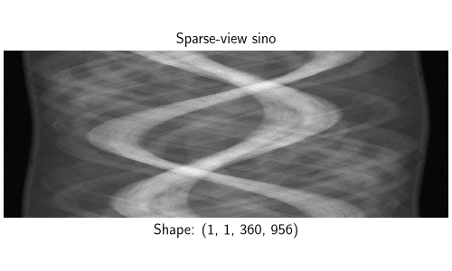
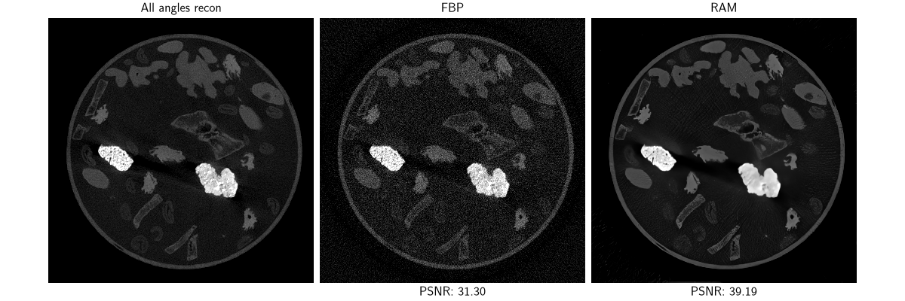
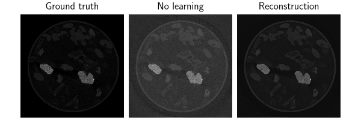
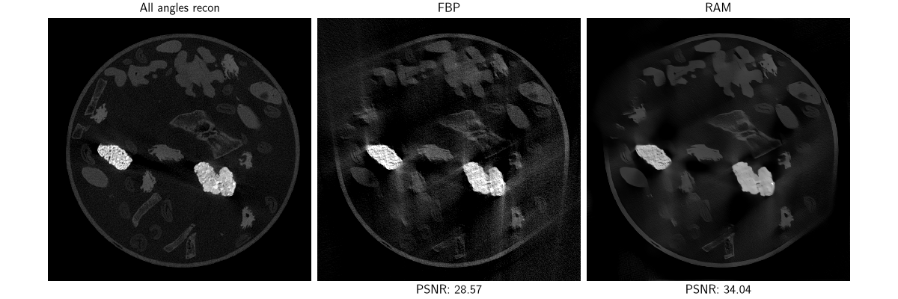
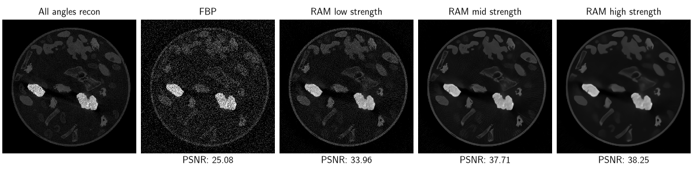

Note
New to DeepInverse? Get started with the basics with the 5 minute quickstart tutorial..
Reconstruct real CT sinograms with the 2DeteCT benchmark#
We demonstrate image reconstruction of acquired CT projection data in sparse-view, limited-angle and low-dose CT acquisition scenarios.
The data is taken from the 2DeteCT benchmark [1] and dataset [2], which is an industrial CT dataset of various materials acquired using a proprietary scanner from CWI (i.e. sinogram-to-image). The setup is matched exactly to Kiss et al.[1], such that you can compare DeepInverse image reconstruction methods with the values reported in Kiss et al.[1].
Note
This example requires astra. Install it with instructions from their docs using pip, conda or conda-forge, e.g. pip install astra-toolbox.
Note that astra only supports CUDA.
This example also requires tifffile. Install it with pip install tifffile.
import deepinv as dinv
import torch
from torch.utils.data import DataLoader, Subset
from matplotlib.colors import Normalize
try:
import astra
except (ImportError, ModuleNotFoundError):
raise ModuleNotFoundError(
"This example requires astra. Install it on a CUDA-compatible machine following https://astra-toolbox.com"
)
device = dinv.utils.get_device()
if torch.device(device).type != "cuda":
raise RuntimeError("The TomographyWithAstra operator only supports CUDA device.")
Selected GPU 0 with 6113.25 MiB free memory
Model acquisition physics#
Construct Astra geometry for fan-beam CT using values from LION. First construct object geometry (single-slice):
obj_geom = astra.create_vol_geom(1024, 1024, 1, -513, 511, -513, 511, -0.5, 0.5)
Then construct CT projection geometry (= conebeam with one detector row):
det_pix = 2 * 0.0748 # binned detector pixel in mm
fov = det_pix * 956 * 431.019989 / 529.000488 # field-of-view width in mm
scale = 1024 / fov # rescale such that recon grid has unit voxels
sod = 431.019989 * scale # source-origin distance
sdd = 529.000488 * scale # source-detector distance
det_pix *= scale
angles = -torch.linspace(0, 2 * torch.pi, 3600 + 1)[:-1] + torch.pi
For sparse-view projection geometry, simply downsample angles. Here, we use 360 angles i.e. 10x acceleration; you can decrease the number of angles to make the problem more challenging.
Finally, we use deepinv.physics.TomographyWithAstra to instantiate the forward/backward projectors:
Tip
You can also use deepinv.datasets.DeteCTDataset.get_astra_geometry() to get obj_geom, proj_geom directly, passing problem='sparse_view', n_angles=n_angles.
physics = dinv.physics.TomographyWithAstra(
object_geometry=obj_geom,
projection_geometry=proj_geom,
is_2d=True,
normalize=True,
device=device,
noise_model=dinv.physics.PoissonGaussianNoise(),
)
Power iteration converged at iteration 18, ||A^T A||_2=253497.38
Load projection data#
Load sparse-view sinograms, which are stored as tiff files from the 2DeteCT test set.
We follow the preprocessing steps performed in LION,
which include detector binning, flat/dark-field correction, and log transform (Beer-Lambert).
We subsample 360 angles out of the total 3600 angles (i.e. 10x acceleration).
Tip
We download a sample test dataset slice (ID 4531), originally hosted at Zenodo and rehosted on HuggingFace for the demo. to demonstrate reconstructing a single sample. See below for processing the test dataset of multiple samples.
root = dinv.utils.get_cache_home() / "2DeteCT"
dinv.datasets.download_archive(
dinv.utils.get_image_url("2DeteCT_slices_4001-5000_slice04531.zip"),
root / "2DeteCT_slices_4001-5000_slice04531.zip",
extract=True,
)
data_dir = root / "2DeteCT_slices4001-5000/slice04531/mode2"
sino = dinv.io.load_tiff(data_dir / "sinogram.tif")[:, :, :-1] # (1, 1, 3600, 1912)
dark = dinv.io.load_tiff(data_dir / "dark.tif") # (1, 1, 1, 1912)
flat = 0.5 * (
dinv.io.load_tiff(data_dir / "flat1.tif")
+ dinv.io.load_tiff(data_dir / "flat2.tif")
)
# sum adjacent binned detector pixels
sino = sino[..., 0::2] + sino[..., 1::2] # (1, 1, 3600, 956)
dark = dark[..., 0::2] + dark[..., 1::2] # (1, 1, 1, 956)
flat = flat[..., 0::2] + flat[..., 1::2]
# Detector corrections:
sino = (sino - dark) / (flat - dark) # flat/dark-field correction
sino = -sino.clip(min=1e-6).log() # Beer-Lambert
sino = sino.flip(dims=(-1,)) # flip detector
# Processed projections of shape (1, 1, n_angles, 956)
y = sino[:, :, :: 3600 // n_angles].float().contiguous().to(device)
dinv.utils.plot(
{"Sparse-view sino": y}, subtitles=[f"Shape: {tuple(y.shape)}"], figsize=(5, 3)
)

File already downloaded: /local/jtachell/.cache/deepinv/2DeteCT/2DeteCT_slices_4001-5000_slice04531.zip. Skipping...
Reconstruct with FBP and RAM#
The A_dagger method of deepinv.physics.TomographyWithAstra uses an approximate pseudo-inverse when fbp=True.
When computed on the full benchmark test set, the performance matches the FBP values reported in Kiss et al.[1].
Note
The FBP below is computed with the normalized operator, so we divide y by physics.operator_norm to obtain quantitative output.
with torch.no_grad():
x_fbp = physics.A_dagger(y / physics.operator_norm, fbp=True)
RAM is a model not trained on any 2DeteCT data, so this example tests its generalisability.
Tip
Tune the sigma and gain parameters to tune the denoising strength. We use some manually estimated parameters here for a quick demo.
# Similar to FBP, for quantitative comparions, we divide the input (and noise model parameters) by `physics.operator_norm`.
model = dinv.models.RAM(pretrained=True, device=device)
physics.update(sigma=0.015 / physics.operator_norm, gain=0.003 / physics.operator_norm)
with torch.no_grad():
x_ram = model(y / physics.operator_norm, physics)
Plot. We plot both images on the same intensity scale by setting the max intensity as 40% of the FBP max, and clip anything above, to have bright visualisations.
The deepinv.datasets.DeteCTDataset class can be used to load x, y, where y are the already-preprocessed sinograms as above,
and x is a precomputed ground truth i.e. a proprietary reconstruction using all angles. We can use PSNR to directly compare our reconstructions
to x since we have ensured they are output on the correct scale.
The dataset finds all samples in the local directory matching the test slice IDs. Here, since only downloaded one slice, it uses the same as above.
dataset = dinv.datasets.DeteCTDataset(
root,
problem="sparse_view",
n_angles=n_angles,
slice_ids="test",
use_dict_output=True,
)
metric = dinv.metric.PSNR(max_pixel=None)
batch = next(iter(torch.utils.data.DataLoader(dataset)))
x, y = batch["x"].to(device), batch["y"].to(device)
with torch.no_grad():
x_fbp = physics.A_dagger(y / physics.operator_norm, fbp=True)
x_ram = model(y / physics.operator_norm, physics)
print(x.max(), x_fbp.max(), x_ram.max()) # all on similar scale
dinv.utils.plot(
{
"All angles recon": x,
"FBP": x_fbp,
"RAM": x_ram,
},
subtitles=[
"",
f"PSNR: {metric(x_fbp, x).item():.2f}",
f"PSNR: {metric(x_ram, x).item():.2f}",
],
rescale_mode=None,
figsize=(12, 4),
vmax=x_fbp.max() * 0.4,
norm=Normalize(vmax=x_fbp.max() * 0.4),
)

tensor(0.0187, device='cuda:0') tensor(0.0173, device='cuda:0') tensor(0.0199, device='cuda:0')
Use the full benchmark#
For the full benchmark, use deepinv.datasets.DeteCTDataset and process them using deepinv.Trainer.test().
This tests the algorithm on all samples of the test set, and the PSNR and SSIM results should be comparable to those reported in the benchmark in Kiss et al.[1].
Tip
For the demo, we do not download anymore data. For the official benchmark, download the full test set yourself by downloading and extracting from Zenodo (and reference reconstructions here). The metrics reported below therefore are computed only over one image of the test set.
Again, to ensure quantitative comparison with ground truth, we scale the dataset samples by the operator norm before inference.
Note
deepinv.Trainer.test() does not do any manual rescaling, so we use min_max rescale mode for plotting. Therefore, “no learning recon” and RAM appear with different visual intensities.
Note
The no learning reconstruction compared here is the least-squares using conjugate gradient, which performs better than FBP, which is merely a fast approximation.
class ScaledTrainer(dinv.Trainer):
def get_samples(self, iterators, g):
x, y, physics = super().get_samples(iterators, g)
return x, y / physics.operator_norm, physics
ScaledTrainer(
model,
physics,
metrics=metric,
optimizer=None,
train_dataloader=None,
device=device,
plot_images=True,
rescale_mode="min_max",
no_learning_method="A_dagger",
).test(DataLoader(Subset(dataset, range(1))))

/local/jtachell/deepinv/deepinv/deepinv/training/trainer.py:593: UserWarning: Update progress bar frequency of 1 may slow down training on GPU. Consider setting freq_update_progress_bar > 1.
warnings.warn(
0%| | 0/1 [00:00<?, ?it/s]
Test: 0%| | 0/1 [00:00<?, ?it/s]
Test: 0%| | 0/1 [00:04<?, ?it/s, PSNR=39.2, PSNR no learning=34.6]
Test: 100%|██████████| 1/1 [00:05<00:00, 5.39s/it, PSNR=39.2, PSNR no learning=34.6]
Test: 100%|██████████| 1/1 [00:05<00:00, 5.39s/it, PSNR=39.2, PSNR no learning=34.6]
Test results:
PSNR no learning: 34.606 +- 0.007
PSNR: 39.193 +- 0.006
{'PSNR no learning': 34.6063232421875, 'PSNR no learning_std': 0.006921505128093182, 'PSNR': 39.19294738769531, 'PSNR_std': 0.00576788281605742, 'runtime': 5.396265796851367, 'peak_gpu_memory_usage': 3.5526304244995117}
Limited-angle CT reconstruction#
The same 2DeteCT dataset can be used also for limited-angle CT reconstruction. The physics reuses all other parameters, except different angles: we take here the first 1200 angles, defining a limited angle (120 degrees) wedge. You can decrease the number of angles to define smaller wedges, which makes the problem more challenging.
Like before, we’ll show how to reconstruct a single acquisition vs. test a full dataset.
n_angles = 1200
proj_geom = astra.create_proj_geom(
"cone", det_pix, det_pix, 1, 956, angles[:n_angles].numpy(), sod, sdd - sod
)
physics = dinv.physics.TomographyWithAstra(
object_geometry=obj_geom,
projection_geometry=proj_geom,
is_2d=True,
normalize=True,
device=device,
noise_model=dinv.physics.PoissonGaussianNoise(),
)
physics.update(sigma=0.006 / physics.operator_norm, gain=0.003 / physics.operator_norm)
dataset = dinv.datasets.DeteCTDataset(
root,
problem="limited_angle",
n_angles=n_angles,
slice_ids="test",
use_dict_output=True,
)
batch = next(iter(torch.utils.data.DataLoader(dataset)))
x, y = batch["x"].to(device), batch["y"].to(device)
with torch.no_grad():
x_fbp = physics.A_dagger(y / physics.operator_norm, fbp=True)
x_ram = model(y / physics.operator_norm, physics)
dinv.utils.plot(
{
"All angles recon": x,
"FBP": x_fbp,
"RAM": x_ram,
},
subtitles=[
"",
f"PSNR: {metric(x_fbp, x).item():.2f}",
f"PSNR: {metric(x_ram, x).item():.2f}",
],
rescale_mode=None,
figsize=(12, 4),
vmax=x_fbp.max() * 0.4,
norm=Normalize(vmax=x_fbp.max() * 0.4),
)

Power iteration converged at iteration 22, ||A^T A||_2=869455.25
Note that, similar above, you can also use deepinv.Trainer.test() to test the model on the full test dataset.
The results on the test set should then be comparable to those reported in the benchmark in Kiss et al.[1].
Low-dose CT reconstruction#
Each sample in 2DeteCT is scanned 3 times: mode2 was used above, and mode1 corresponds to a low-dose
acquisition (3W instead of 90W, i.e. 30x lower dose).
mode3 is a beam-hardened acquisition, you can also try on this.
Tip
Since sigma and gain control the noise model, you can tune the sigma and gain parameters to tune the denoising strength, where lower values mean less denoising and vice versa. For example, here we show 2 strengths.
proj_geom = astra.create_proj_geom(
"cone", det_pix, det_pix, 1, 956, angles.numpy(), sod, sdd - sod
)
physics = dinv.physics.TomographyWithAstra(
object_geometry=obj_geom,
projection_geometry=proj_geom,
is_2d=True,
normalize=True,
device=device,
noise_model=dinv.physics.PoissonGaussianNoise(),
)
# use estimated higher noise params
physics.update(sigma=0.03 / physics.operator_norm, gain=0.1 / physics.operator_norm)
dataset = dinv.datasets.DeteCTDataset(
root, problem="low_dose", slice_ids="test", use_dict_output=True
)
batch = next(iter(torch.utils.data.DataLoader(dataset)))
x, y = batch["x"].to(device), batch["y"].to(device)
with torch.no_grad():
x_fbp = physics.A_dagger(y / physics.operator_norm, fbp=True)
x_ram = model(y / physics.operator_norm, physics)
physics.update(
sigma=0.05 / physics.operator_norm, gain=0.13 / physics.operator_norm
)
x_ram_higher_strength = model(y / physics.operator_norm, physics)
physics.update(
sigma=0.015 / physics.operator_norm, gain=0.08 / physics.operator_norm
)
x_ram_lower_strength = model(y / physics.operator_norm, physics)
dinv.utils.plot(
{
"All angles recon": x,
"FBP": x_fbp,
"RAM low strength": x_ram_lower_strength,
"RAM mid strength": x_ram,
"RAM high strength": x_ram_higher_strength,
},
subtitles=[
"",
f"PSNR: {metric(x_fbp, x).item():.2f}",
f"PSNR: {metric(x_ram_lower_strength, x).item():.2f}",
f"PSNR: {metric(x_ram, x).item():.2f}",
f"PSNR: {metric(x_ram_higher_strength, x).item():.2f}",
],
rescale_mode=None,
figsize=(12, 3),
vmax=x_fbp.max() * 0.4,
norm=Normalize(vmax=x_fbp.max() * 0.4),
)

Power iteration converged at iteration 12, ||A^T A||_2=2534973.25
Similarly you can also use deepinv.Trainer.test() to test the model on the full low-dose test dataset.
The results on the test set should then be comparable to those reported in the benchmark in Kiss et al.[1].
- References:
Total running time of the script: (1 minutes 1.438 seconds)